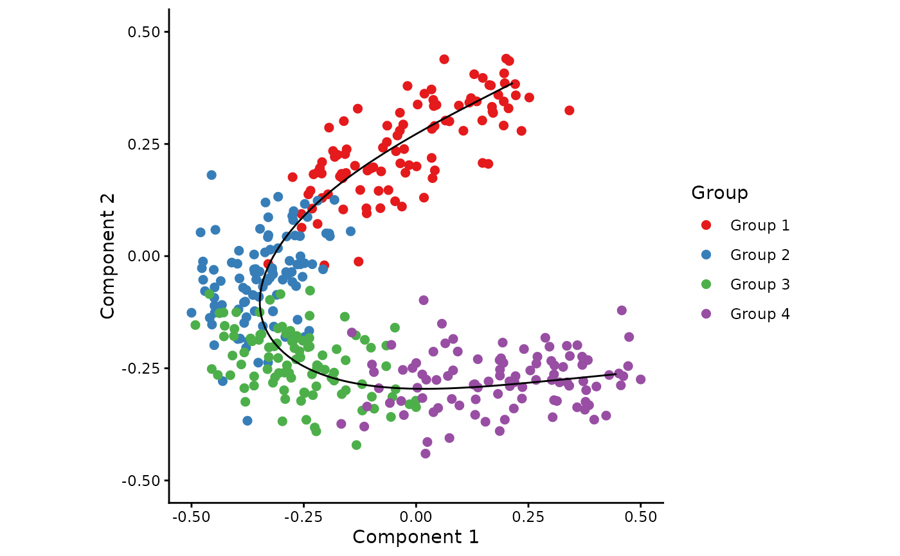
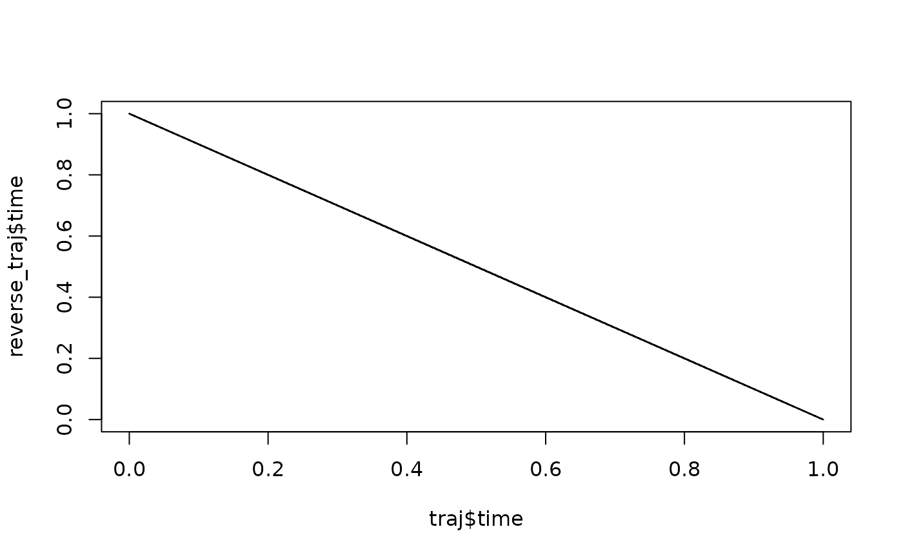

Since the direction of the trajectory is not specified, the ordering of a trajectory may be inverted using reverse_trajectory.
Arguments
- trajectory
A trajectory as returned by
infer_trajectory.
Examples
## Generate an example dataset and infer a trajectory through it
dataset <- generate_dataset(num_genes = 200, num_samples = 400, num_groups = 4)
group_name <- dataset$sample_info$group_name
space <- reduce_dimensionality(dataset$expression, ndim = 2)
traj <- infer_trajectory(space)
## Visualise the trajectory
draw_trajectory_plot(space, group_name, path = traj$path)
#> Ignoring unknown labels:
#> • fill : "Group"

## Reverse the trajectory
reverse_traj <- reverse_trajectory(traj)
draw_trajectory_plot(space, group_name, path = reverse_traj$path)
#> Ignoring unknown labels:
#> • fill : "Group"
 plot(traj$time, reverse_traj$time, type = "l")
plot(traj$time, reverse_traj$time, type = "l")
